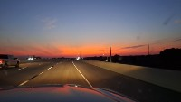

Carl Eberle | WDD 130>
Hello. My name is Carl Eberle. I am from Olivehurst CA. I am the oldest of four kids in a family of six. I enjoy playing games with family and friends, as well as going trap shooting or skeet shooting with shotguns. My favorite foods are Ramen, Sushi, Little Ceasars Pizza, and Steak.